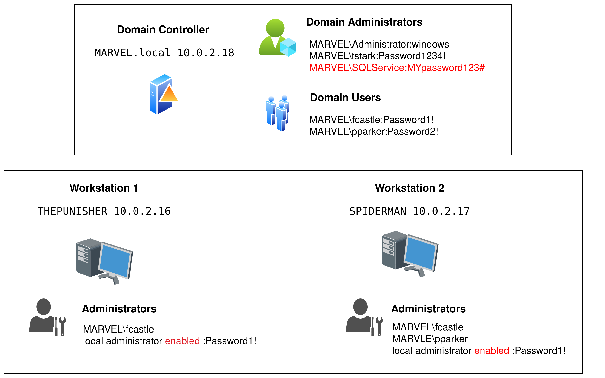

Example AD Lab#
This document describes the Active Directory lab built on VirtualBox, the machines, accounts, and the distinction between domain and local accounts.
Lab inventory#
{kind=link}

Active Directory Lab#
1. HYDRA-DC (Domain Controller)#
Hostname: HYDRA-DC
Role: Domain Controller for
MARVEL.localIP:
10.0.2.18(static)Important local account:
vboxuser(VM user) — passwordP@$$w0rd!(local VM account)Domain accounts present and used:
MARVEL\\Administrator(password:windows), Domain AdminTony Stark(tstark, password:Password1234!).Service account:
MARVEL\\SQLService(password:MYpassword123#) — used to run a service; an SPN was registered:
setspn -a HYDRA-DC/SQLService.MARVEL.local:60111 MARVEL\\SQLService
setspn -T MARVEL.local -Q "*/"
File share
SMB share name:
hackme(hosted on HYDRA-DC)
Notes: As a DC there is no local SAM-based Administrator account in the same sense as a standalone Windows machine, administration is via domain accounts.
2. THEPUNISHER (Windows 10 Enterprise)#
Hostname: THEPUNISHER
Role: Domain-joined workstation
IP:
10.0.2.16(static)DNS: points to domain controller
Local VM account:
vboxuser(password:windows1)Domain accounts used to sign in:
MARVEL\\administrator(password:windows)Local
Administratorenabled with passwordPassword1!Domain user
fcastleis configured as a local administrator on this machine.
3. SPIDERMAN (Windows 10 Enterprise)#
Hostname: SPIDERMAN
Role: Domain-joined workstation
IP:
10.0.2.17(static)DNS: points to domain controller
Local VM account:
vboxuser(password:windows2)Domain accounts used to sign in:
MARVEL\\administrator(password:windows)Local
Administratorenabled with passwordPassword1!Domain users
fcastleandpparkerare configured as local administrators on this machine.
Key concept: Domain accounts vs Local accounts#
Domain accounts
Authenticated by the domain (Active Directory). Credentials and groups are stored in AD and apply across domain-joined machines.
Identifiers commonly appear as
DOMAIN\\useroruser@domain.local.Typically used for centralized administration, service accounts, and cross-machine permissions.
Local accounts
Stored in a machine’s local SAM database. Valid only on that specific machine (except when replicated manually).
Identifiers commonly appear as
MACHINE_NAME\\user.Useful for VM-specific tasks, boot-time access, or recovery when domain is unavailable.
Quick comparison#
Property |
Domain Account |
Local Account |
|---|---|---|
Where authenticated |
Domain controller (AD) |
Local machine (SAM) |
Scope |
Any domain-joined machine (with appropriate rights) |
Single machine only |
Examples in this lab |
|
|
How to tell account type during enumeration#
Domain accounts often appear as
MARVEL\\useroruser@MARVEL.local.Local accounts appear as
MACHINE_NAME\\user(e.g.,THEPUNISHER\\Administrator) when enumerating local SAM ornet useron that machine.From a domain-joined machine,
whoami /upnorecho %USERDOMAIN%\\%USERNAME%show domain-qualified names.On the DC, user accounts are domain accounts, the DC does not use local SAM for user authentication.